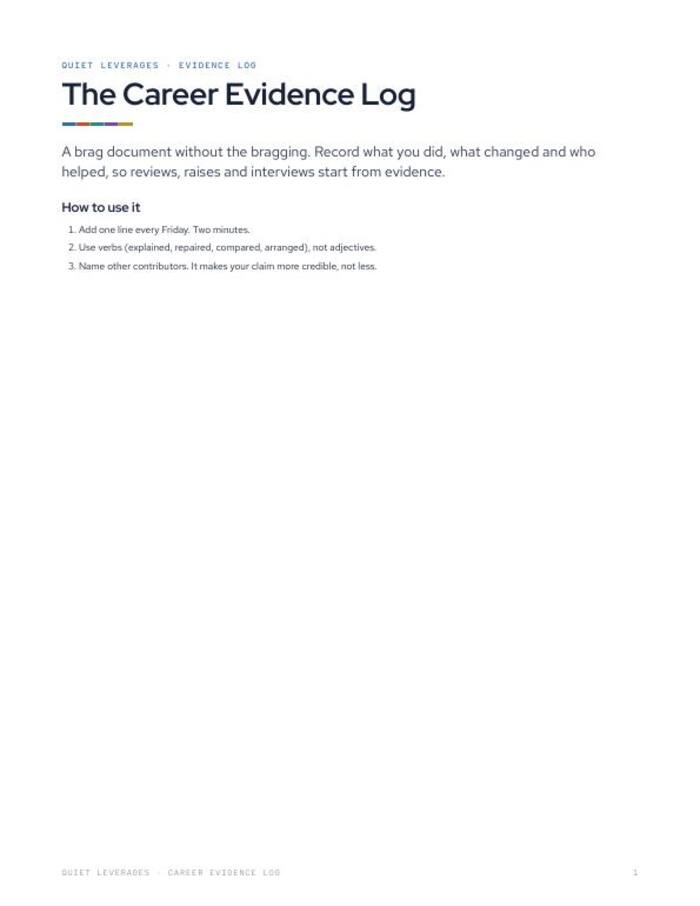

Your review is in three weeks and you cannot remember what you did in March.
Log your work wins every Friday so reviews, raises and interviews start from evidence, not memory.
Google Sheet (.xlsx) + printable PDF. Opens in Google Sheets or Excel. Instant download.

One line every Friday
Two minutes a week. The log builds itself.
Verbs and numbers
Built around what you did and what changed, not adjectives.
Tagged for reuse
Skill tags and a 'use in' column mark which entries suit a review, a raise or an interview.
files: PDF and Google Sheet
entry each Friday
of managers were engaged in 2025, down from 31% in 2022. When attention is thin, the person with written evidence is easier to back.
Gallup, 2026What changes after you fill it in
No more blank-page reviews
Months of entries ready when the review form arrives.
Evidence for a raise
The same log feeds the case for a raise conversation.
A summary by skill
The sheet groups your wins by skill so patterns show up.
Credit that holds up
A column for who else helped makes your claims more credible.
Everything in the download
- Google Sheet (.xlsx). Skill tags, a 'use in' column and a summary by skill.
- Printable log page. Date, what you did, what changed, who else helped.
- Three simple rules. One line every Friday, verbs not adjectives, name other contributors.
- Opens in Google Sheets or Excel. In Google Sheets, use File > Import.

Friday, one line, two minutes
Add one line
Every Friday, record what you did.
Add the change
Use a verb such as explained, repaired or arranged. Add a number if it is honest.
Name who helped
Naming other contributors makes your claim stronger, not weaker.
A good fit if your wins vanish by the next quarter
Use this if
- You have a review, raise or interview coming and nothing written down.
- You can spare two minutes on a Friday.
- You want a log that is plain and quick to keep.
Skip it if
- You want the full seven-day raise plan. See Salary Negotiation Prep or The Raise Kit.
- You want a place for long reflection. This log is one line a week.
- You expect it to write your self-review for you. It holds the evidence.
Why written evidence helps
of managers were engaged in 2025, down from 31% in 2022.
Gallup, 2026of workers say they stay in their job out of fear and economic uncertainty.
Monster, Oct 2025median from starting a job search to a first offer.
Huntr, Q1 2026What readers say about Career Evidence Log
Start the log this Friday
A sheet and a printable page. Two minutes a week.
- Google Sheet (.xlsx) with skill tags and summary by skill
- Printable log page
- Three rules for good entries
Before you decide
Do I need Google Sheets?
No. It is an .xlsx file that opens in Google Sheets (File > Import) or Excel. The printable PDF works on its own too.
How long does it take?
About two minutes each Friday.
What should I write?
What you did and what changed. Use verbs such as explained, repaired, compared or arranged. Add a number if it is honest, and name who helped.
Can I keep it on paper?
Yes. The printable page works on paper or in any PDF app. It is US Letter and prints on A4 at fit to page.
Is it safe to keep work details in it?
It is your own file, on your own device or paper. Keep anything confidential out of it, as you would with any personal notes.
Is this employment advice?
No. General education, not employment or legal advice.
The next step after this one

The Raise Kit
Seven days of preparation, one four-line ask, and what to say to every pushback.

The Career Kit
Thirteen weeks, one move a week. A career that funds your life instead of draining it.

The Stay-or-Go Worksheet
Should I quit my job? Decide on paper, not at 2 a.m.
One line this Friday.
By the next review you will have months of evidence.
Get it for $7Instant download on Gumroad.